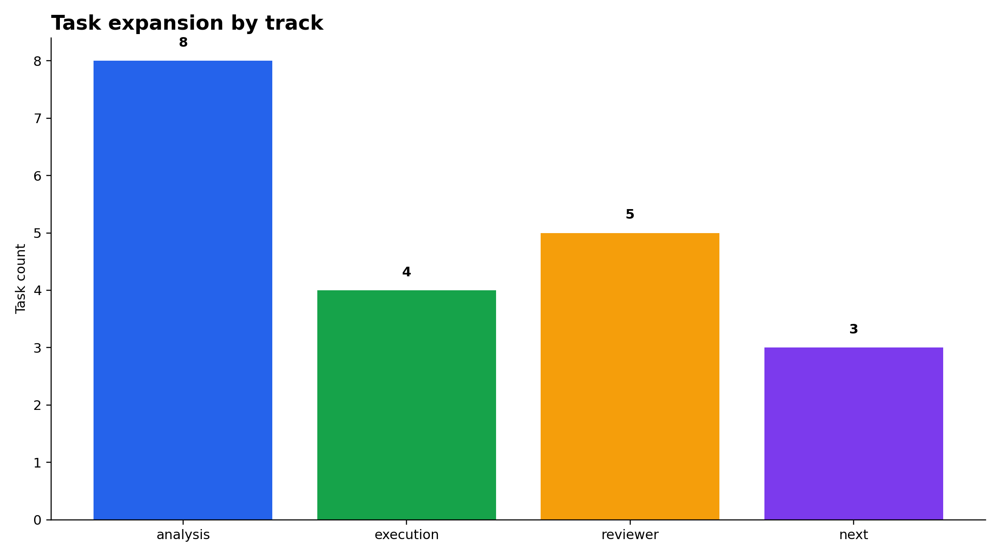
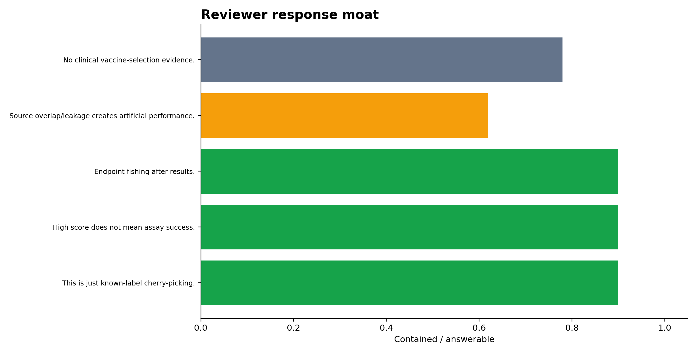
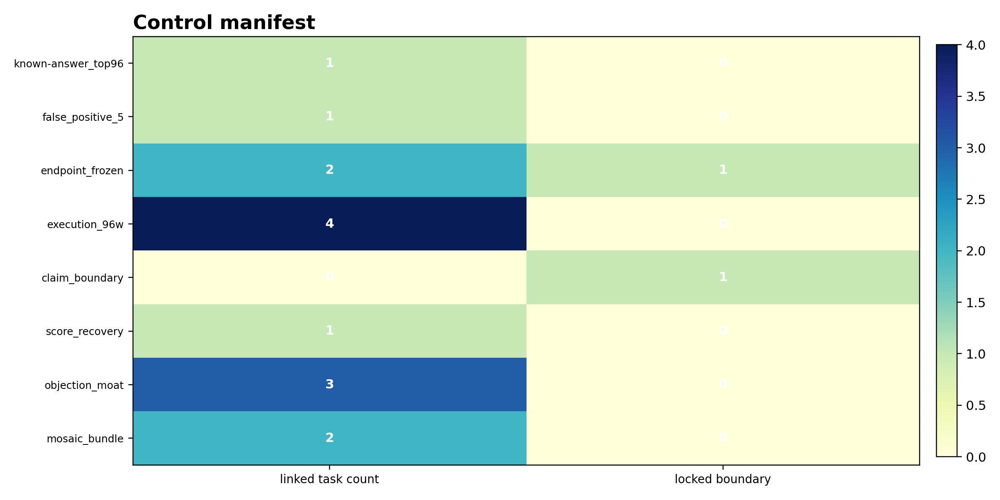
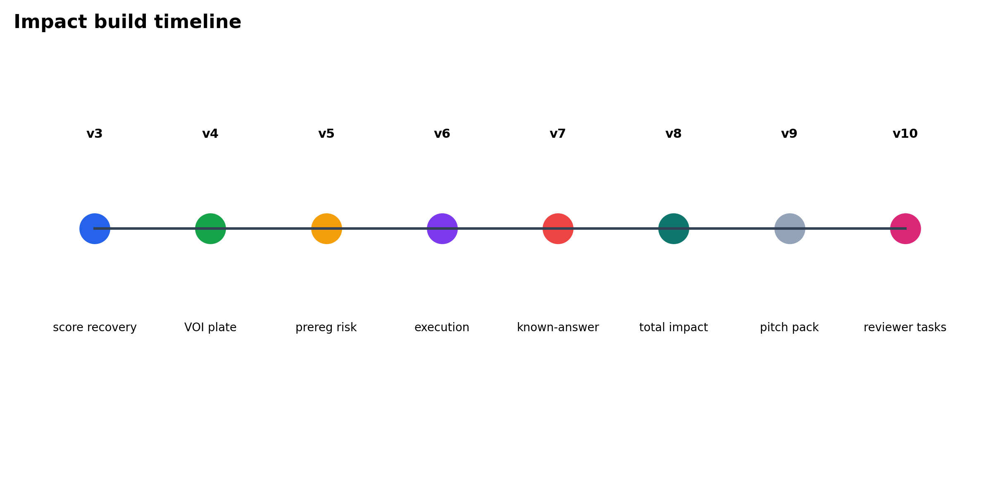
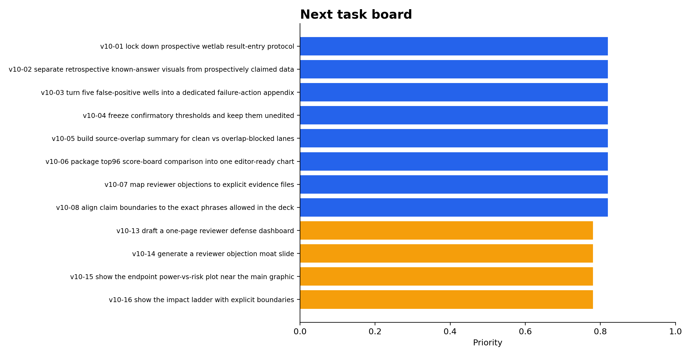
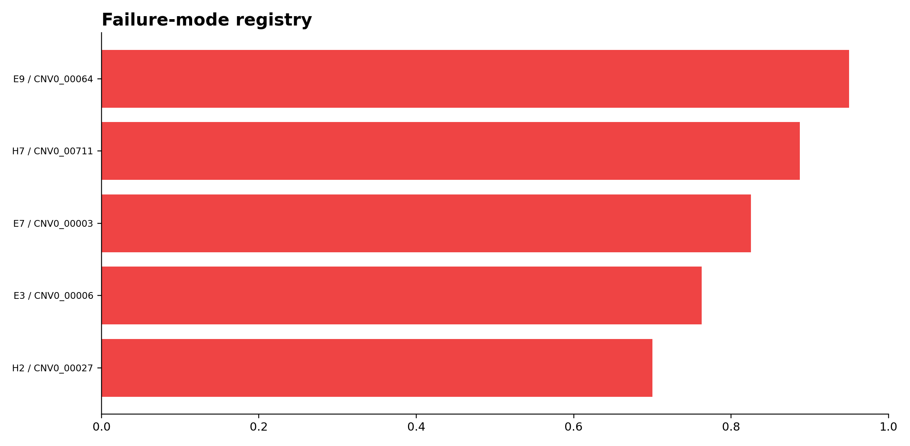
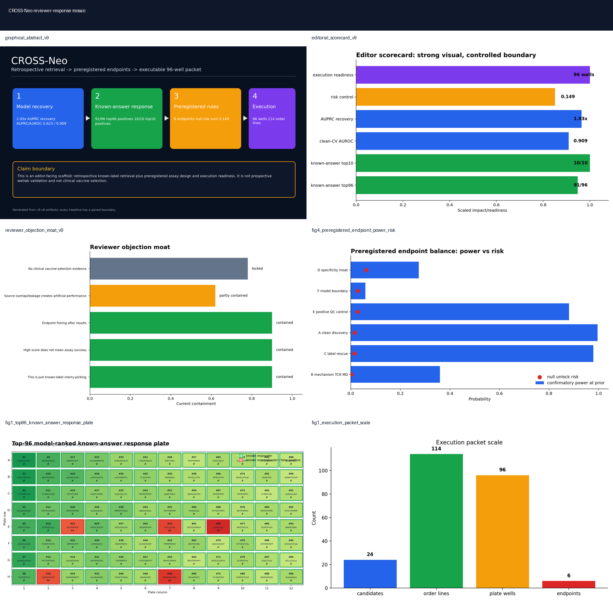

01Figures







02Task board
| task_id | task_code | track | task | why_it_matters | claim_boundary | status |
|---|---|---|---|---|---|---|
| RVT-12847E2E | v10-01 | analysis | lock down prospective wetlab result-entry protocol | keeps raw calls separate from endpoint calls | retrospective / preregistered / claim-safe only | ready |
| RVT-E326AFFD | v10-02 | analysis | separate retrospective known-answer visuals from prospectively claimed data | prevents label leakage in pitch | retrospective / preregistered / claim-safe only | ready |
| RVT-0A3B6E60 | v10-03 | analysis | turn five false-positive wells into a dedicated failure-action appendix | shows transparency rather than hiding misses | retrospective / preregistered / claim-safe only | ready |
| RVT-C273A238 | v10-04 | analysis | freeze confirmatory thresholds and keep them unedited | prevents endpoint fishing | retrospective / preregistered / claim-safe only | ready |
| RVT-B701F4B7 | v10-05 | analysis | build source-overlap summary for clean vs overlap-blocked lanes | keeps claim boundary visible | retrospective / preregistered / claim-safe only | queued |
| RVT-092170B4 | v10-06 | analysis | package top96 score-board comparison into one editor-ready chart | makes impact legible at a glance | retrospective / preregistered / claim-safe only | queued |
| RVT-290CFB51 | v10-07 | analysis | map reviewer objections to explicit evidence files | reduces rebuttal latency | retrospective / preregistered / claim-safe only | ready |
| RVT-7B2F44EE | v10-08 | analysis | align claim boundaries to the exact phrases allowed in the deck | prevents overclaim drift | retrospective / preregistered / claim-safe only | ready |
| RVT-10A8F3C1 | v10-13 | reviewer | draft a one-page reviewer defense dashboard | ties the chain together | reviewer-defense scaffold only | ready |
| RVT-AE26A41C | v10-14 | reviewer | generate a reviewer objection moat slide | highlights contained objections | reviewer-defense scaffold only | ready |
| RVT-0C091F49 | v10-15 | reviewer | show the endpoint power-vs-risk plot near the main graphic | makes preregistration concrete | reviewer-defense scaffold only | ready |
| RVT-6F718470 | v10-16 | reviewer | show the impact ladder with explicit boundaries | prevents a claim jump | reviewer-defense scaffold only | ready |
| RVT-4A148D11 | v10-17 | reviewer | bundle the best figures into a single mosaic | editor-friendly scan path | reviewer-defense scaffold only | ready |
| RVT-46135C87 | v10-09 | execution | convert task board into a lab handoff checklist | connects figures to action | execution scaffold only | ready |
| RVT-FAF0A85E | v10-10 | execution | add a reagent order manifest for candidate and control sequences | supports ordering without redesign | execution scaffold only | ready |
| RVT-F4DCF223 | v10-11 | execution | prepare a blinded 96-well entry sheet for the next round | keeps operational state separate from interpretation | execution scaffold only | ready |
| RVT-B0A82EF9 | v10-12 | execution | build a candidate-level response board for quick yes/no calls | single-entry point for future assay readout | execution scaffold only | ready |
| RVT-90FEFA3C | v10-18 | next | prioritize wetlab-ready positive controls for follow-up | keeps the next run practical | next-step scaffold only | queued |
| RVT-1AC7E921 | v10-19 | next | route label-noise rescue wells into a provenance audit queue | separates rescue from relabeling | next-step scaffold only | queued |
| RVT-8163E20B | v10-20 | next | turn the strongest 91/96 board into a graphical abstract | highest-impact visual | next-step scaffold only | queued |
03Control manifest
| control_id | purpose | anchor | what_it_rules_out | source_version | linked_task_count | boundary_status |
|---|---|---|---|---|---|---|
| known-answer_top96 | known answer visual | top96 response plate | retrospective only | v7 | 1.000 | active |
| false_positive_5 | false-positive audit | failure wells table | show misses explicitly | v7 | 1.000 | active |
| endpoint_frozen | preregistered thresholds | confirmatory endpoint plan | no post-hoc tuning | v5 | 2.000 | locked |
| execution_96w | operational readiness | well map and result entry sheet | handoff to lab | v6 | 4.000 | active |
| claim_boundary | claim safety | claim boundary table | forbidden upgrades | v9 | 0.000 | locked |
| score_recovery | model recovery | clean-CV score board | benchmark recovery | v3/v8 | 1.000 | active |
| objection_moat | reviewer defense | objection map | pre-answer objections | v9 | 3.000 | active |
| mosaic_bundle | pitch visual bundle | figure mosaic | one-glance overview | v9 | 2.000 | active |
04Reviewer matrix
| reviewer_objection | response_file | task_code | priority_anchor | status |
|---|---|---|---|---|
| This is just known-label cherry-picking. | Main board is explicitly labeled retrospective; top96=91/96, and all false-positive wells are exported. | v10-14 | objection moat slide | contained |
| High score does not mean assay success. | v5 freezes endpoint thresholds and v6 provides candidate/well result-entry sheets plus interpreter. | v10-13 | one-page reviewer dashboard | contained |
| Endpoint fishing after results. | Confirmatory thresholds are predeclared; null-risk sum=0.149. | v10-04 | frozen threshold pack | contained |
| Source overlap/leakage creates artificial performance. | Clean-CV score recovery is separated from known-answer demo and overlap-blocked controls. | v10-05 | evidence-to-claim matrix | partly contained |
| No clinical vaccine-selection evidence. | The clinical claim is explicitly locked in the evidence matrix. | v10-08 | claim boundary table | locked |
05Failure registry
| failure_mode | example | detection | action | severity |
|---|---|---|---|---|
| known-answer false positive | H2 / CNV0_00027 | top96 review table and score-board comparison | hold as red example in the deck; do not promote | medium |
| known-answer false positive | E3 / CNV0_00006 | top96 review table and score-board comparison | hold as red example in the deck; do not promote | medium |
| known-answer false positive | E7 / CNV0_00003 | top96 review table and score-board comparison | hold as red example in the deck; do not promote | medium |
| known-answer false positive | H7 / CNV0_00711 | top96 review table and score-board comparison | hold as red example in the deck; do not promote | medium |
| known-answer false positive | E9 / CNV0_00064 | top96 review table and score-board comparison | hold as red example in the deck; do not promote | medium |
| endpoint fishing | confirmatory risk sum 0.149 | frozen endpoint table | keep thresholds fixed | high |
| claim inflation | clinical vaccine-selection | claim boundary table | lock claim boundary | high |
| execution drift | candidate/well mismatch | execution manifest + 96-well map | keep result-entry sheet separate | medium |
06Five-slide scaffold
| slide | title | headline | support | claim_boundary |
|---|---|---|---|---|
| 1.000 | One-line impact | 91/96 known-answer positives | retrospective top96 board with five red wells | retrospective known-label visualization |
| 2.000 | Why it is strong | 1.93x score recovery | clean-CV recovery over failed stacker | benchmark recovery only |
| 3.000 | Why it is controlled | 0.149 confirmatory risk sum | frozen endpoint plan and result-entry sheets | pre-assay endpoint statistics |
| 4.000 | Why it is executable | 96 wells / 114 order lines | candidate manifest, reagent order, and interpreter | execution scaffold only |
| 5.000 | Why reviewers stay inside boundary | 20 next tasks + 8 controls | task board and control manifest | reviewer-defense scaffold |
07Sources + paths
Output directory: /home/seungho/personal/THCA_data_analysis/project/results/cross_neo_kaggle_winner_playbook_2026_05_10/reviewer_response_v10_2026_05_11
Local deploy: /home/seungho/personal/THCA_data_analysis/project/papers_hub_2026_05_04/cross_neo_reviewer_response_v10.html
Live deploy status: ok